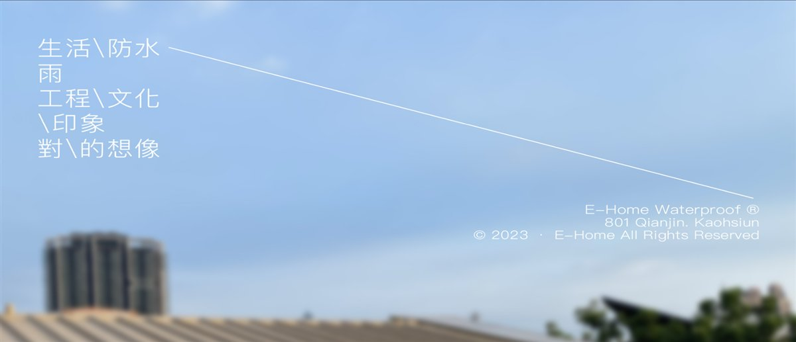
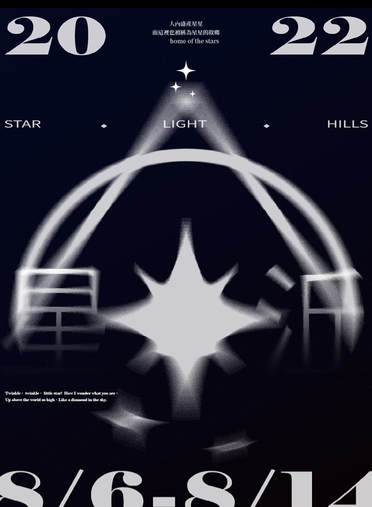
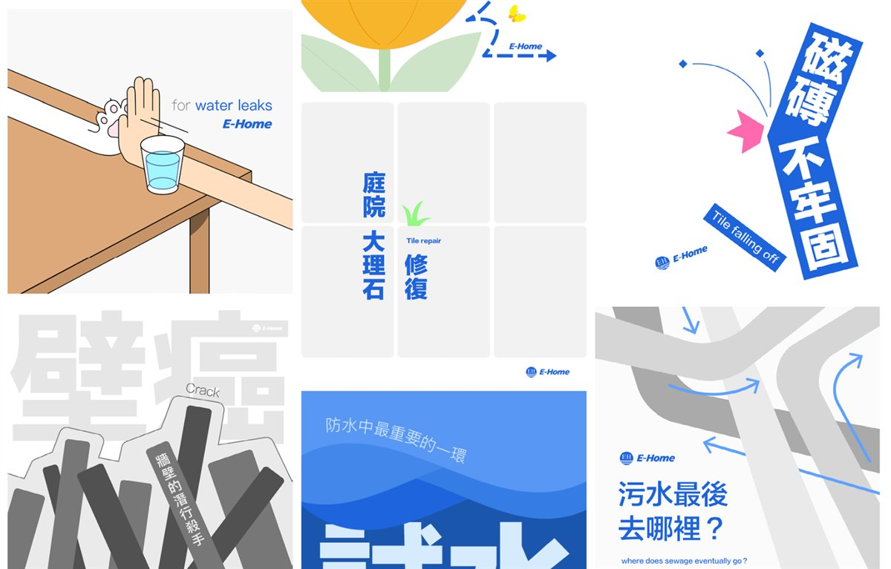
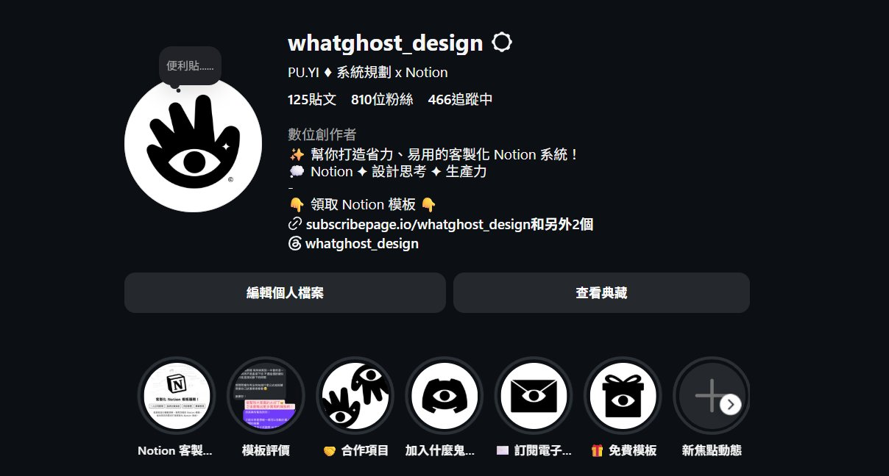
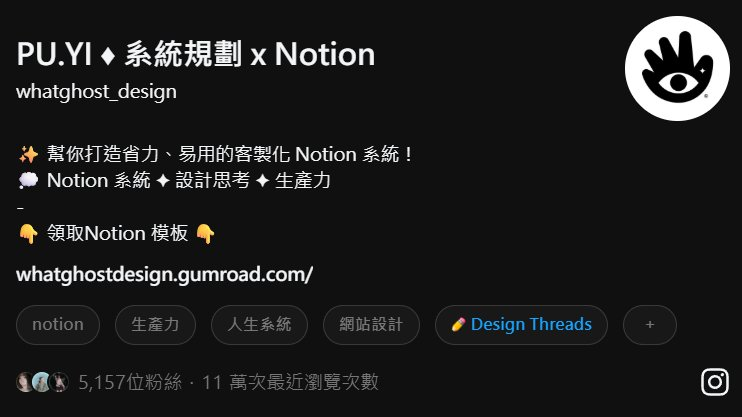
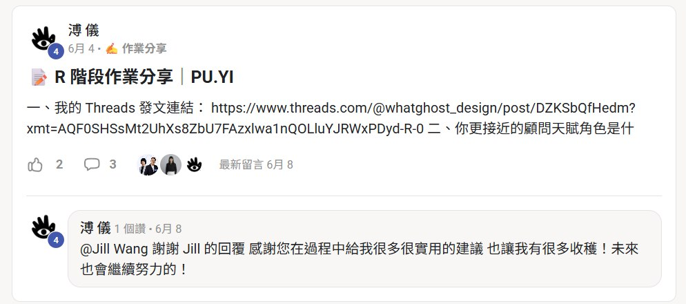
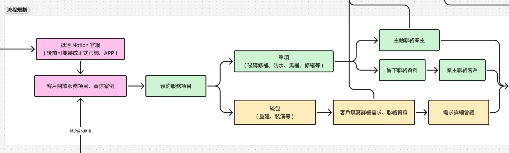
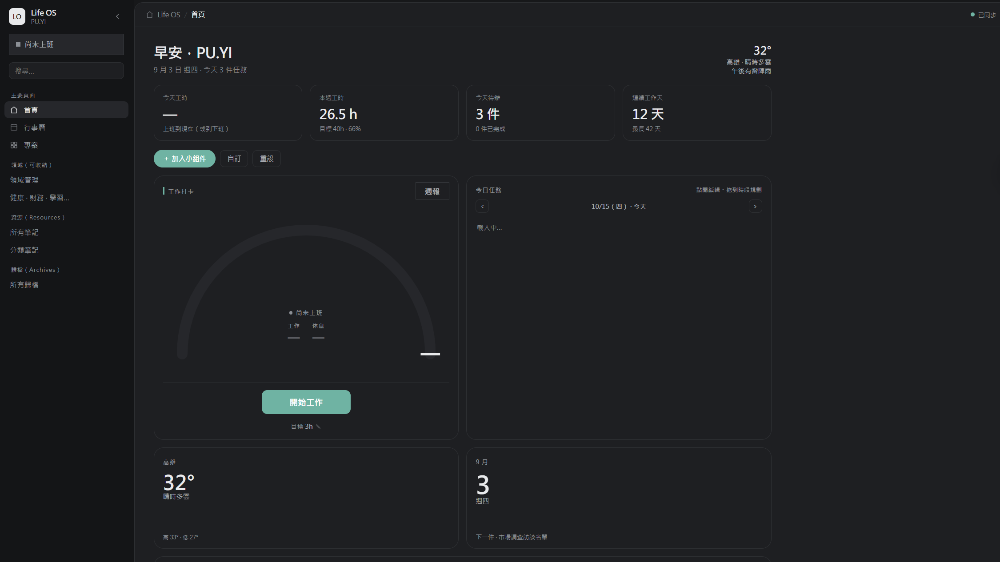

第二屆學員 · 6/4 完課






6/4 完課更有價值的，是我在過程中學到的思維
模板、工具都圍繞 Notion
一開始很有成就感
Notion 不是最佳解
再執著下去會被綁架
讓價值在 AI 時代有更多應用


這些都是脫離 Notion 之後，可以應用在任何地方的關鍵技能
別緊張，我沒有要賣課
過程中要隨時提醒自己流量不重要（但偶爾還是會迷失）
要關注的是：就算沒有流量，也能拿到的好處
面試時一講到有經營自媒體，對方都眼前一亮
會自己找事情做
知道受眾是誰、想看什麼
貼文、銷售頁
會做貼文、打廣告
自然會接觸到各種工具
作品公開，習慣回饋和負評
知道流行什麼、大家在討論什麼
讓真實回饋說服有需要的人
模板、工具、課程，讓人一看就想買
大方說出你有接哪些案子
線上建立好感，線下建立信任
看不到客戶現在用的系統，很難直接點出痛點
看到的人和轉化不可控，要系列規劃、持續更新
容易吸引只是看看的人，但依領域可能有意外效果
直接問對方有沒有需要 Notion 系統或架設網站
長期持續的被動開發，但需要蠻長的時間
課程內有講到
從 Notion 進階到程式碼，打造企業專屬系統
例如可以嵌入 Notion 的計時器、時鐘
明年可能有機會開課！
歡迎提問